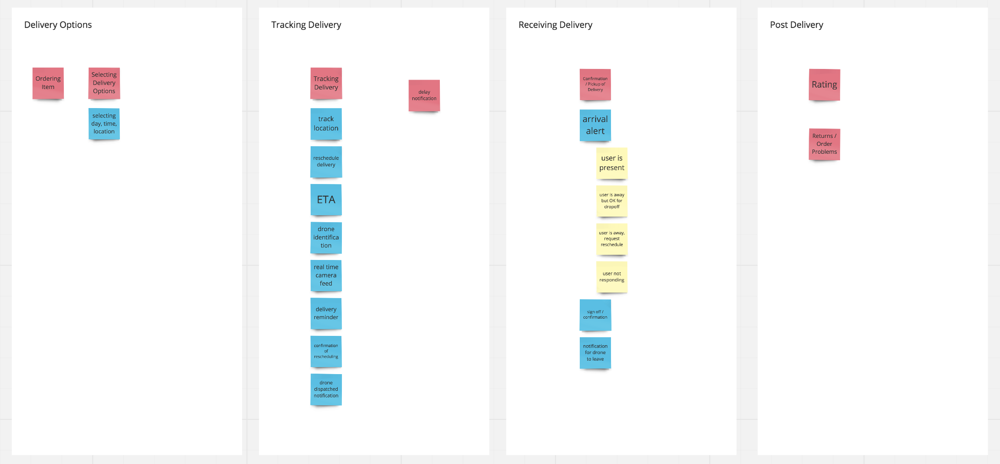
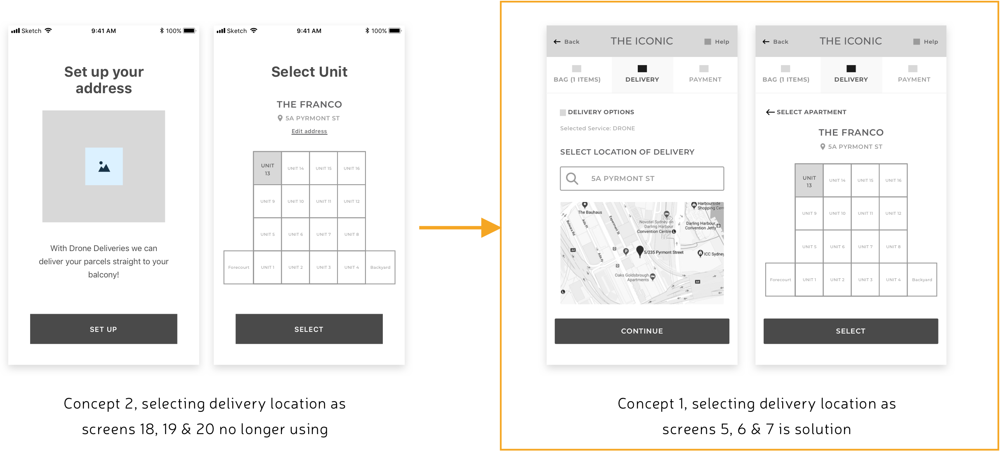

Process Journal.
INTRODUCTION
Welcome to my process journal! This functions somewhat as a cross between an Appendix and traditional journal. Here you'll find a record of my design process. This includes everything from my ideas, research findings, observations, challenges, prototype evolution and testing, interface sketches and lo-fidelity and hi-fidelity designs. Skip ahead to any section as you see fit!
BACKGROUND RESEARCH
The goal of my research is to investigate how people living in apartments receive deliveries and how happy they are with these services.
Research Goals
The goal of my research is to investigate how people living in apartments receive deliveries and how happy they are with these services.
Research Questions
-What sorts of things do they get delivered?
-How do they get these things delivered?
-How satisfied are they with the current service?
-What specific aspects of deliveries are most frustrating?
-What specific aspects of deliveries do they appreciate?
Research Methods
Interviews - Semistructured
HOW // 7 participants were chosen that represent a broad age demographic (19-61) and who have experience with different types of Apartment deliveries (small parcels, food, larger goods).
WHY // Important to gain insight into the perspective and attitudes of a variety of different users. Paying particular attention to their experiences, needs, pain points and poignant emotions as this is important to understand what they find frustrating and what they appreciate.
HOW IT WILL BE ANALYSED // The data was recorded and transcribed. From this it was analysed by the creation of an Affinity Diagram. This enabled the similar needs, frustration, and appreciations to be grouped and collated.
Direct Experience Storyboarding
HOW // An actual delivery was carried out. Some small goods were ordered to an apartment online and the process was recorded and documented.
WHY // Great for the designer to immerse themselves and understand the user’s experience firsthand. This enabled me to appreciate the users current experience of deliveries and what I found frustrating and what I appreciated.
HOW IT WILL BE ANALYSED // The data will be recorded via photos and notes which will be presented in a storyboard. A reflection on this experience will be offered with my key frustrations of the process listed and my key appreciations of the existing service.
Analysing Research Data
Affinity Diagram
After transcribing the audio recordings of my 7 user interviews I began to use affinity diagraming to group the needs...

RESEARCH FINDINGS
User Needs
I need delivery options to fit around my work and life commitments
"Well it just takes ages because say I get something delivered during the week I always miss it because of work and then they send it to the post office. But the post office is always closed when I get home from work, so the only time I can pick it up is on a weekend which is annoying."
I need to not have to leave my apartment when my delivery arrives
"[Ideally] if it just arrived at my door that’d be pretty sick."
I need to know that my delivery/parcel is safe when delivered
"I want to know that it’s been delivered like it said it would be. I like to track my package. If it says it would be delivered on this day I would like confirmation of that, even if I wasn’t home or anything."
I need clear, accurate real-time tracking and communication about my delivery
"Ideally with a tracker that counts down the time until the driver will be there..."
I need to not have to drive to pick up my delivery
"Well it just takes ages because say I get something delivered during the week I always miss it because of work and then they send it to the post office. But the post office is always closed when I get home from work, so the only time I can pick it up is on a weekend which is annoying."
Persona 1 - Jane Smith

BIO
Jane, 25, lives in an aprtment in the Hills district yet travels to the city everday for work. Here she works in marketing at an agency. She is passionate about photography, fashion and brunch. Naturally she spends too much of her downtime shopping for clothes and makeup online. When ordering online she often doesn’t have much control over her delivery options and finds that the companies she buys products from normally outsource this processs to another company such as Australia Post or StarTrack. She often comes home to find that she has missed a delivery and as her apartment has nowhere safe to store them, they end up getting sent to the local post office. She is always annoyed that by the time she gets home, the Post office is always closed and her only window to pick them up is Saturday morning. She has had to cancel brunch a coupel times to pick up her orders and this always makes her incredibly annoyed. She wishes there was a way for deliveries to be more flexible and arrive after work hours so she didn’t have to drive to the post office every time she got something delivered.
GOALS
- Plan her next Saturday brunch to catch up on all the goss with her friends
- Make sure she has a continual supply of foundation coming in. She can’t risk running out of it
- Update her winter outfits so she’s ready for her upcoming Europe trip
FRUSTRATIONS
- That she is always at work when her deliveries arrive as they normally only come during business hours
- Having to drive to the Post office on a Saturday to pick up her parcels
- That there’s nowhere safe to leave her parcels at her apartment

Persona 2 - Bradley Sanchez
BIO
Bradley, 34, works in a demanding industry as a Pharmaceutical Rep. This means he often finds himself travelling and working late hours which is a struggle for his young family. Sometimes when he comes home late from work and finds his wife and 2 year old daughter asleep he realises he hasn’t had dinner and orders food from a nearby restaurant using the Uber Eats App. While he waits for his food to arrive he often finds himself catching up on some work or putting on the dishwasher so he doesn’t get in trouble the next morning. However whilst he is trying to catch up on these things he often notices that he is interupted by the delivery driver calling him when he can’t find his apartment in the complex. Furthermore often he has to go down the elevator to pick up the food as he doesn’t want to have to give the delivery guy his lift code for safety reasons. He wishes there was a way his food could just apear at his door and that getting food delievered would be a more hassle free experience so he could use the waiting time more productively.
GOALS
- Relax after a hard days work and catch up on household chores
- Not have to bother with cooking or the hassle of going out to pick food up
- Stay in his apartment where it is warm and cosy
FRUSTRATIONS
- Have to answer the phone and explain to the delivery driver where his apartment is in the complex
- That he has to leave his apartment and the complex to get his food. The point of delivery is to make it easier, right?
- That there isn’t an easy yet safe way for a stranger such as a delivery person to get to the front door of his apartment when he wants them to

Research Synthesis
After conducting my research individually I shared my research with the individuals I would be collaborating with for the rest of the project. To synthesise our research and analyse it together we used a mind map and then grouped user needs together to creat a hierarchy of needs.
Combined User Needs
- I need to know that my parcel is securely delivered
- I need to know accurate, real-time status of my parcel/delivery
- I need options to fit my schedule
- I need my parcel delivered directly to my apartment
Problem Statement
How Might We create an apartment delivery experience that is reassuring and convenient for apartment residents?
IDEATION
After formulating our research findings we turned our attention to ideating solutions that would adequately meet our problem statement and solve all our key user needs. My two group members and myself decided to go away and come up with an idea each and then pitch it to one another.
My Idea - Idea One
I envisioned a drone service in which people were able to have a drone deliver their package straight to their apartment balcony. After chatting to apartment residents I was aware that some apartments did not have balconies and that there would need to be other locations at the apartment complex that could also function as delivery points.
To explore this option more I storyboarded the idea to gauge what sort of interactions would need to occur.

After completing the first storyboard I realised that there could be an issue if the user had ordered the drone to arrive at a particular time and then forgotten about the order and would not be home when it arrived. I storyboarded this scenario to plan out how I thought the service could deal with this issue.

Having storyboarded the idea and thought through it from different avenues I felt I was ready to evaluate it. I did so by comparing it to the Problem statement and key user needs that we had developed.
Pros:
- This delivery method gives the user flexible options to fit around their schedueles. The drone can basically arrive whenever in a short window of time (~15-30min feels adequate).
- It delivers directly to the apartment and saves the user having to go to the post office if they miss it.
- It provides a clear, real-time way to track your delivery. Possibly even have option to see live camera feed from drone?? The fact that the delivery timeslot is so short also lessons the need to excessively track your order (as you don’t need to plan around it as much)
- It delivers directly to the apartment and saves the user having to go to the post office if they miss it.
Cons:
- Potentially an issue with cross platform performance i.e. what if the user does online shopping on their laptop and hence sets up the drone delivery via their laptop. Will they also need the Phone App in order to pick up their order once it has arrived on the drone? How will you make this clear or enforce people to download the App in order to complete the transaction?
- What happens if they miss the drone? Is this possible, what would this look like? Refer to consideration re how long the drone would wait for the user to respond.
Considerations:
- What happens if you book a timeslot and then realise you cannot make it anymore? Can you rescheduele the drone delivery time? Is this for free or will it cost money? Can you get it to drop off the parcel in a safe location if you desire?
- How does choosing the location of the delivery work?? It is no longer about choosing general address but about an exact location
- How does the drone notify the user when it arrives? Does it leave a message, does it more or less call the users phone?
- How long will the drone wait for the user to get the parcel before it flys away?? Will it provide the option to leave the parcel?
- How does the user receive the parcel once the drone has arrived? Does it land and dispense the parcel? Does the user pick it up while the drone is still flying? Do they need to scan something to verify they have received the parcel? Can the drone photograph/video this interaction for proof?
Idea Two
This concept was developed by a group member. It envisions that apartments now have a delivery bay that drones can delivery parcels to. Once the parcel has been dropped off it is stored in a central location at the apartment and accessed via a kiosk. A user would be notified and pick up there parcel at any time from the kiosk after it has arrived.

Pros:
- Convenient delivery time (no need to be there in person)
- Small number of steps (easy use)
- Potentially easy for returns as well
- Unique tracking code and verification procedure - sense of security
Cons:
- Requires changing building infrastructure across multiple apartments to use service
Idea Three
This idea was envisioned by another group member. It imagines that due to drone technology apartments have chutes built into each individual apartment much like personal letterboxes. A drone is able to fly to the appropraite chute and drop the parcel off which is accessed on the inside by those living in the apartment.

Pros:
- Convenient delivery time (no need to be there in person)
- Small number of steps (easy use)
- Convenient - delivered straight into house
Cons:
- Requires changing building infrastructure across multiple apartments to use service
- Security concerns in the event of mistakes (e.g. delivered to wrong house, tampered packages)
- Unable to use service for returns
Ideation Evaluation
We had developed our 3 ideas separately and then came together to pitch them to one another and critique each others idea. From there we went away and thought more before deciding which one we should choose to focus and iterate upon. I was a little apprehensive that the decision making process could get messy and that we would need to create a complex set of metrics in order to validate them
We all realised quite quickly that our ideas fit into two different categories. My idea (idea one) assumed that drone delivery technology would be operating with apartment infrastructure as we currently know it. The other two ideas assumed that apartments would change and look drastically different with the introduction of autonomous drone technology. In light of this we were aware that the second category had an increasingly high amount of hypothetical variables. For example what would happen with older apartments that hadn't been re-fitted? Would our solution have to accomodate for these as well?
Chosen Idea
Idea One:
A drone delivery service that allows customers to have drones land on their apartment balconies to deliver goods. These deliveries would be accessible after business hours and would arrive within short windows of time to provide a service that is convenient and reliable.
CONCEPT EXPLORATION
Information Architecture
After choosing to focus on our solution of a drone delivery service that is capable of landing on balconies we decided to explore the information that users would need at each stage of the jounrey. We realised that any delivery experience was quite linear. In fact there were 3 key stages:
- Purchasing product and selecting delivery location
- Tracking the delivery before it arrives
- The event of actually receiving the delivery
To explore all the info that users would need at various stages and how it would relate to these 3 categories we created an affinity diagram. To do this we wrote info that was required and placed it into one of these 3 categories. During this process we also realised that there could potentially be a fourth stage, a post delivery stage, what the user did after they received the delivery. In most cases this may not be important but there could be delivery issues or issues with the product they received and this would be a key need for some users.
Reflection:
Thinking through the information architecture really was a useful strategy that began to make thinking through what screens we would needs for the App very tangible. It was an exercise that really set up our project for a win and I'm glad we did it at such an early stage.
Delivery Location
Originally when we were planning out our information architecture we assumed that selecting the delivery location would occur during the first stage which was purchasing the product. However we realised that due to the autonomous nature of our drone delivery service traditional residential or postal addresses were no longer a viable option in terms of choosing your address. Instead the parcel could be delivered straight to your balcony or some other location on your apartment complex. Thus selecting the exact delivery address could be a more complex process then it currently is. Due to this fact someone mentioned offhand that they might not want to have to go to this arduous process until after they had purchased their product. This forced us to think through two different and distinct user flows.
- Concept 1 //Flow One: User selects the “specific” location before confirmation of purchase
- Concept 2 //Flow Two: The user selects a “rough” residential location before confirmation of purchase and a “specific” apartment complex/balcony location before the arrival of the drone
LOW FIDELITY PROTOTYPING
Our Low Fidelity prototypes began as very rough, quick sketches and progressed to nicer and more detailed paper prototypes that we used for our first round of user testing.
1. Low Fidelity Sketches
We decided to start thinking through the more complex and unique functions that our App would undergo. A lot of these functions weren't unique in and off themselves but were made more complex due to the autonomous nature of our drone delivery technology that we were designing for.
Delivery Location
Selecting the delivery location offers many new hurdles due to autonomous technology. Previously delivery options only needed to be as accurate as a residential or postal address. Once the delivery person has arrived at this destination the process then relies on their human intuition to find the right apartment, ring the doorbell and possibly move around the apartment complex as they see necessary. With an autonomous drone there are both exciting new possibilities and several limitations that must be worked around. On one hand the drone can arrive at previously inaccessible and precise locations such as a customers balcony. However they do not have human intuition and the ability to be flexible if circumstances change. To design this we explored several different ideas in regards to the user selected the precise delivery location at their apartment complex. These sketches can be seen in the slideshow below.
Time and Date
Another key function that our app needed to have is the capacity for the user to select what time they want their delivery to arrive. Traditionally, parcel delivery doesn’t provide a large range of options. The most common message is that ‘your delivery will arrive between 3-5 business days.’ However Autonomous drones offer very different delivery time options. Firstly they will most likely be making individual trips and have the option of delivering within much more defined time frames which is common in food delivery services e.g. pizza delivery. Normally there is a 30-40 minute window in which the user can expect the delivery to arrive. We adopted this notion and arbitrarily chose 15-30 minute delivery intervals for the sake of prototyping. Secondly drones aren’t restricted to working traditional 9am-5pm shifts so there are far more time slots available for delivery. We experimented with a few UI ideas to discover what options best accommodate this new range of possibilities.
2. Paper Prototypes
Aim
We developed the paper prototypes in order to test the two different concepts we had come up with. Concept 1 and Concept 2 had different sitemaps/siteflows due to the fact that we were unsure about the best place for the user to provide the exact delivery location they required.
How
The paper prototypes were drawn on paper and then entered into the Marvel app via photo. This allowed us to create ‘clickable links’ so that users could click the main CTA buttons and understand the flow of the screens. The Marvel app also provided the real context of seeing the paper prototype on a smartphone.
USER TESTING ONE
1. User Testing Preparation
Goal
Our goal for our first round of user testing was to explore which of our concepts provided a more intuitive user experience. Concepts 1 and 2 differed in the sense that they placed the requirement for the user to enter the exact delivery location at different stages. Concept 1 placed this event before the commencement of payment i.e. while the user was still on an ecommerce platform and ordering their product. Concept 2 on the other hand envisioned that this would take place later once the parcel had been ordered and as the user was setting up the drone delivery app.
Method - Usability Testing with Think Aloud & Observation
We set the users a number of taks to perform with the paper prototypes in order to simulate the functionality of the app. These had been put on the Marvel app in order to provide the realism of using a smart phone. One set of our users tested Concept 1 first and then performed the same set of taks with Concept 2. The second lot of users started with Concept 2 and then went on to use Concept 1. As they were performing these tasks we encouraged them to use the Think Aloud protocol and verbalise their thoughts, feelings and frustrations. On top of this we observed how well they were completing these tasks and whether they had any difficulties or if their actions were contradicting their verbalised thoughts. Once they had completed the tasks we asked a few semi-structured interview questions aimed at getting the user to reflect on their experience.
Tasks Set
- Place an order for a drone delivery to an apartment
- Track your order when it is dispatched
- Receive your parcel as it is delivered by drone
2. User Testing Results
a) CONCEPT 1 vs. CONCEPT 2 - aka where to put the in-depth Delivery Location Set up
The loudest message was that the in-depth delivery location set up should occur earlier when the user is still purchasing the product (so Concept 1 was preferred). There were some mixed messages about this. 2 of the users were very vocal about selecting the exact delivery location earlier whereas the other 3 users did not seem to mind either option.
“I don’t like the fact that setting up [delivery location] was so late, maybe it is better with the sign up being earlier so it’s easier to go through it.”
b) Cut out some repetitive and unecessary steps
Users felt that at points there were some unecessary screens making certain functions take too long. These included too many confirmation and summary screens.
“I care about if the delivery will actually arrive [in relation to summary page]. But there were too many steps.”
c) Too many ‘Confirmation Buttons’, need to streamline screen interactions
Users felt that the need to often have to press the Confirmation button to get from one screen to the next was overdone and often cumbersome. They wanted quicker and more intuitive interactions between screens were possible.
“It takes too long… I shouldn’t need to press confirm every time. Why can’t I just press on the apartment and that is what selects it?”
3. Iterations based on User Testing
a) Selecting Delivery Location placed early on before purchasing product
This was the big take away from our first round of testing and we were glad that this issue had been resolved and we were now able to focus on otherpotential improvements within the UI.
b) Removed some confirmation buttons
In some locations we removed ‘continue’ & ‘confirmation’ buttons and allowed the tiles & buttons to simply transition to the next screen. To compensate for the fail safe that confirmation buttons offered we included back buttons and/or a progress bar in case the user made a mistake or changed their mind.
WIREFRAMES
Develop Wireframes
After receiving feedback from our first round of user testing we iterated on our paper prototypes to make imporvements based upon the results we discovered. At this stage we chose to increased the fidelity of our prototype and created digital wireframes using Sketch. These were then added to Invision so we could create clickable hotspot links and connect all the screens. This was done so that we would have a more realistic prototype that we could completely click through for our next stage of user testing.
User Flow
As a critical part of trying to understand the users experience we created a 'user flow' which showed how each of the screens connected and how the user would pregress through the App depending on their interactions.
USER TESTING TWO
1. User Testing Preparation
Goal
At this stage we wanted to focus more specifically on the usability and intuitive nature of each screen and the UI elements and patterns that the user encountered. For example in the first test we were concerned especially with the big picture flow and when we should get the user to select the delivery location. Here we wanted to focus on their experience of actually selecting the delivery location for example and make sure this experience was coherent and simple.
Method - Usability Testing with Semi-structured Interview
We had the user complete a lot of very small functions that create the entire app experience i.e. ‘choose the delivery time, choose the delivery location’ and then asked them questions straight after they had completed each task. In total we broke the App into 20 different stages and asked a set of questions at each of these stages, so it was quite an in-depth process. These questions were particularly aimed at gauging their thoughts, waht they liked, disliked and any concerns they had about each screen and the functions that they performed. We took notes at every point that we asked questions. After we had done this for every stage of the App we asked some brief reflection questions aimed at getting them to reflect on their entire experience and the overall flow of the App.
Iteration on Test One
During our first round of user testing we noticed that users were having trouble with the think aloud method and actively verbalising all their thoughts. As a result we probably didn’t get quite as many quality insights as we were after. To solve this problem for the second round of testing we decided to run a more structured test and planned to ask the user questions at every screen they encountered. This method was also much more appropriate for our testing goals for this round.
2. User Testing Results
a) Users want to see Delivery Address on the first Tracking Screen
Users pointed out that the delivery location was absent from the first tracking screen (screen when the drone has not been dispatched yet). They would prefer to see this than have the invoice/parcel details.
“I don’t want to see cost of my parcel I’ve already paid for it, I want to see the delivery location like where it’s coming. I should already know that [parcel info].”
b) Issue with the App not being able to track multiple deliveries
The issue was raised that there is no clear way to track multiple parcels at once. This was a clear error on our part and something we hadn’t properly thought through.
“What if I have multiple deliveries at once, how would that work? How do I check that?”
c) Selecting delivery time issue
Users felt that there was some uncertainty about how to select the time. The scrollable option that was present was unintuitive and took too long to select a desired time.
“How do I select the time I want? What if I want a really different time? Do I really have to scroll all the way up?
d) Users want more time related info on the Drone Landing screen
Users felt that there was some uncertainty about how to select the time. The scrollable option that was present was unintuitive and took too long to select a desired time.
“How do I select the time I want? What if I want a really different time? Do I really have to scroll all the way up?
e) On the sign off screen users don’t want to see the invoice of the product
Users mentioned that since they had already paid for the product they didn’t want to see the cost but the focus should be on the product that they are receiving. If they see the cost again it is confusing as it almost makes them feel like they have to pay agin
“I don’t want to see cost of my parcel I’ve already paid for it, I want to see the delivery location like where it’s coming. I should already know that [parcel info].”
3. Iterations based on User Testing
a) Provide Delivery Address location to first Tracking Page
Users wanted to view the delivery address location more so than their package information. We still felt that it was important to have the option to view their package info so we wanted to keep it. We were struggling for screen real estate so decided that the user can swipe their address info back and forth to see the package info.
b) Tab Nav bar and a Deliveries Home Page added to App
In order to overcome the issue of our app not being able to track multiple deliveries we had to enable the user to have the option to add new deliveries and have a Deliveries home page with tiles which when clicked on contained the detailed information about each delivery.
HIGH FIDELITY DESIGNS
Having successfully iterated on our wireframes and received good feedback from our usability studies we were ready to press ahead with developing the High Fidelity Prototype. This meant finalising the aesthetic of our App.
Finding the 'Right Look'
In order to find the right aesthetic for our app we began looking for inspiration by looking on Dribbble which is a platform where designers share their work.
Originally I was planning on creating a proper moodboard but due to time contrainsts (we had 2 weeks to develop high fidelity mockups and an interactive prototype and companion product website) I created a Bucket on Dribbble. A bucket is basically just a repository of the images and gifs you have liked.
We found a few looks we liked:
Experimenting
We played around with a few of these looks to see what our App would feel like.
Evaluating the Look
Whilst we really liked the dark UI of the Space App we ended up leaning towards the flat design look and feel of the Google Bank App. There were several reasons for this decision. Firstly dark UI is notoriously difficult to succesfully implement well and the Space App also relied on bright image assets but our wireframes didn't necessitate the need for lots of image assets. In terms of creating assets our group had a lot of experience working with flat design and creating flat illustrations and assets. Thus we decided to go for a fun, flat design look and feel.
Final Outcome
Once we settled on the style we worked through the wireframes and applied the fun, flat look that we agreed upon.